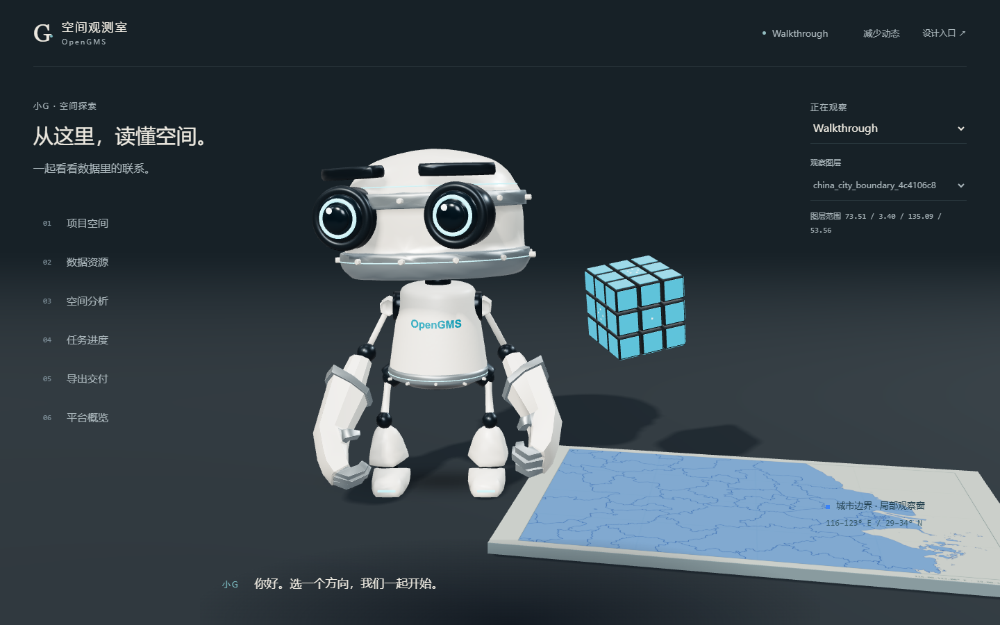
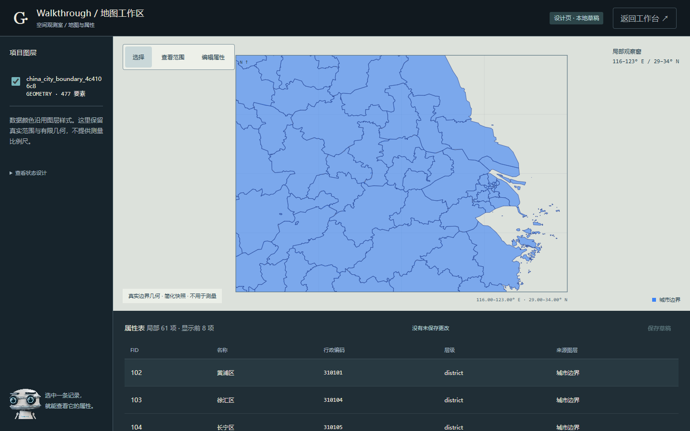

D01 / 设计原型 · R1 / 2026.09.14
一个安静的空间，六个观察方向。真实小G与魔方、同一片城市边界，从首次相遇到进入工作台。

这是独立设计原型。项目、图层与任务来自已注明时间的只读快照；表单提供选择与校验，不提交分析、不生成导出文件。请使用文字导航选择方向，预览可以无限停留，点击“展开工作台”才进入目的页。
Frame 0 是选择“空间分析”的瞬间；Frame 90 / 180 分别是 1.5 / 3 秒观察点。展开有独立时间轴。
实际浏览器录屏。约 2 秒选择空间分析，约 6 秒由用户点击展开。具体时间以 film-manifest.json 的事件记录为准；录屏不能替代实时性能测试。
同一项目、原色边界与真实属性；查看图层、地图、属性表和离开分支的完整设计。
